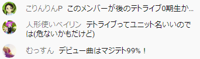

テトライブ(仮)
テトライブ一期生メンバー
(※50音順、敬称略)
- あそんでくらすよ^ ^ Twitter YouTube
- くぷりん Twitter YouTube
- shellshock
- シノン Twitter YouTube
- 夏影ソウナ Twitter YouTube
活動記録
| 日付 | 内容 |
|---|---|
| 2020/10/10 | ベリフェス延長戦 |
| 2020/10/25 | 【バーチャル焼肉→寿司】#テトリス文化祭 の反省会（仮） |
| 2020/12/12 | #テトリス配信者忘年会2020 |
| 2021/01/10 | #テトリス配信者新年会2021 |
| 2021/05/04 | 【テトリス99】テトリス配信者GWコラボ2021 |
🤔
- 「テトライブ」という名称、大丈夫??
名称の由来

画像は
【バーチャル焼肉→寿司】#テトリス文化祭 の反省会（仮）
のコメントより抜粋。
5人の総称どうする？という話題でなかなか思いつかないところに突如登場。
当時はこの名称にすると明確に決めたわけではないが、事実上決定していた。
他の候補には桃太郎(5人のアイコンのうち3人が動物なことから)もあった。